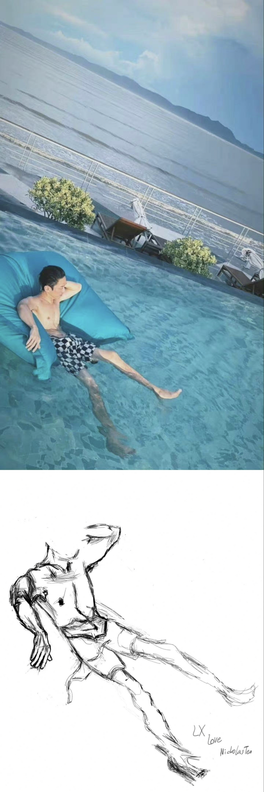
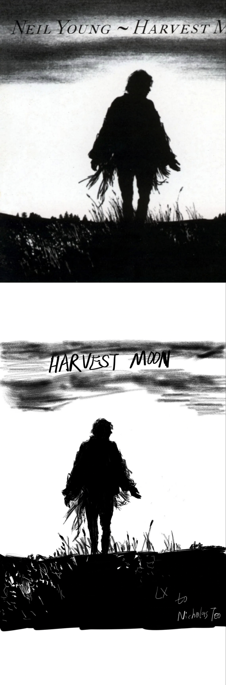

Part 1 : Painting
¶
没有想象力的画画爱好者只能画素描，hhhh~~
用心画了，就要记录下来，不能丢失~~
慢慢补吧，啊啊啊，先放最近的···
~~~上面为原图，下面为自作~~~
1. 梁崽（laogong）相关
¶
1.1 painting 1
¶

1.2 painting 2
¶
1.3 painting 3
¶

LNICHOLASX
导航
Contents:
Part 1 : Painting
1. 梁崽（laogong）相关
1.1 painting 1
1.2 painting 2
1.3 painting 3
Part 2 : Novels
Part 3 : Photos
Related Topics
Documentation overview
Previous:
Welcome to LNICHOLASX’s documentation!
Next:
Part 2 : Novels
快速搜索